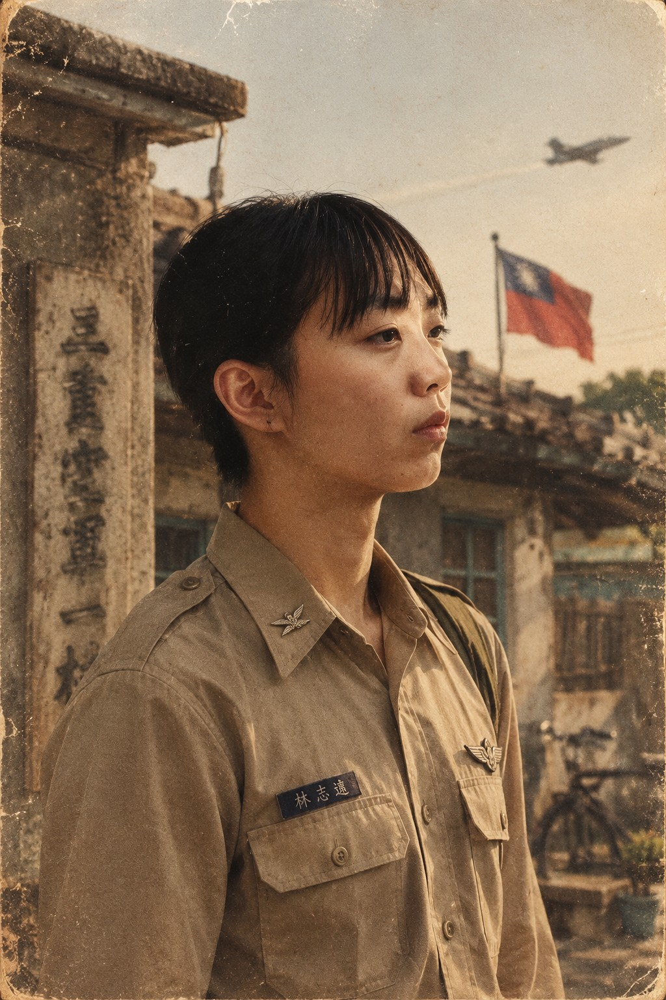
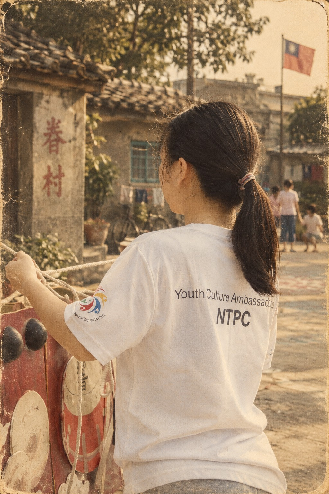
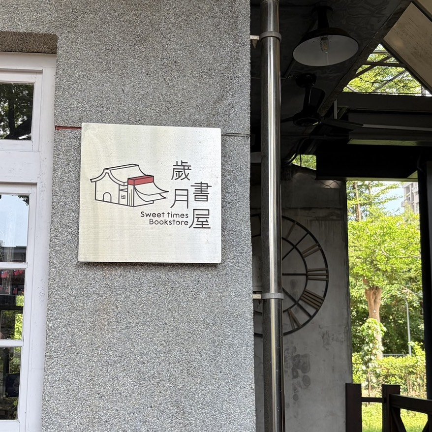
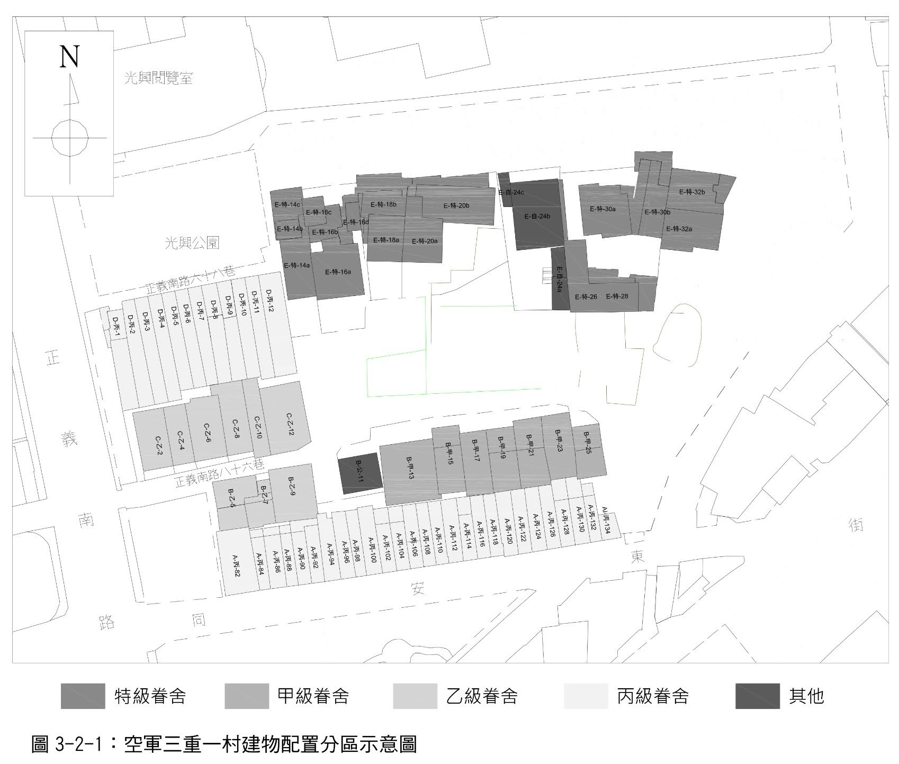
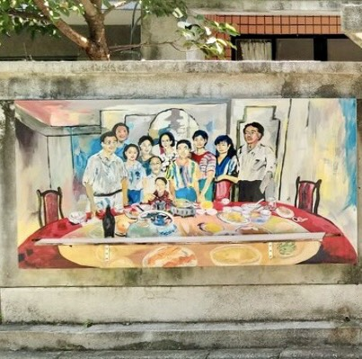
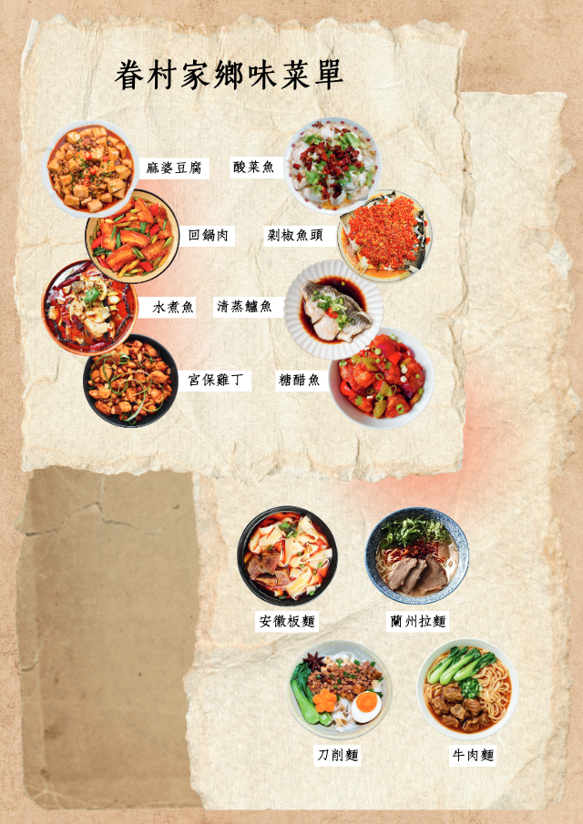
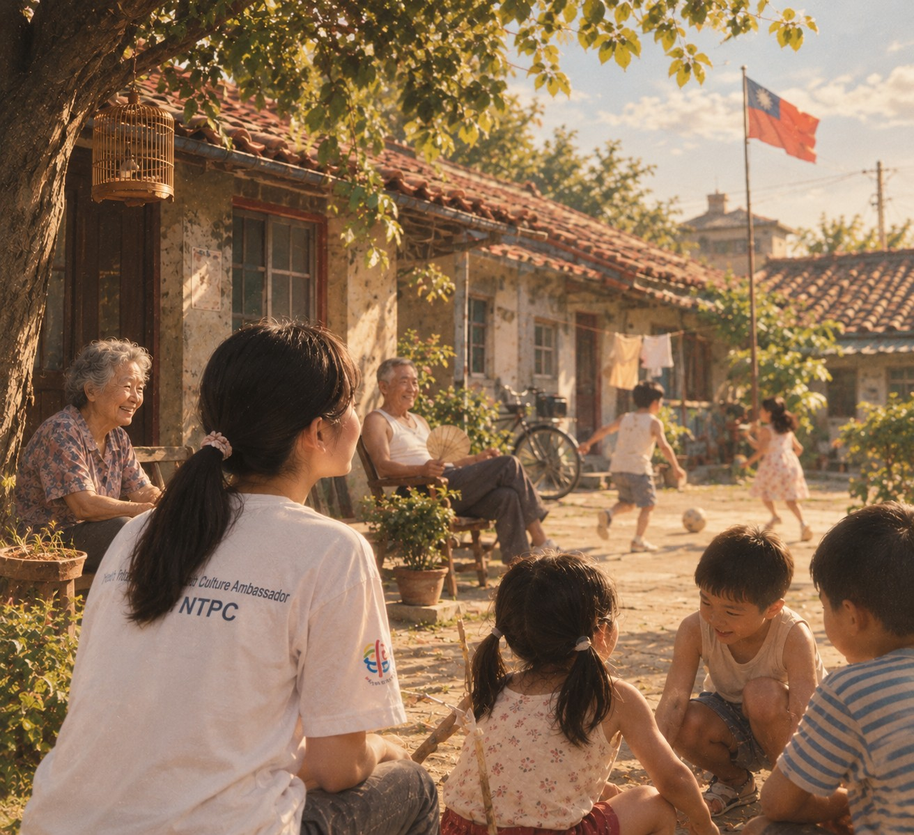
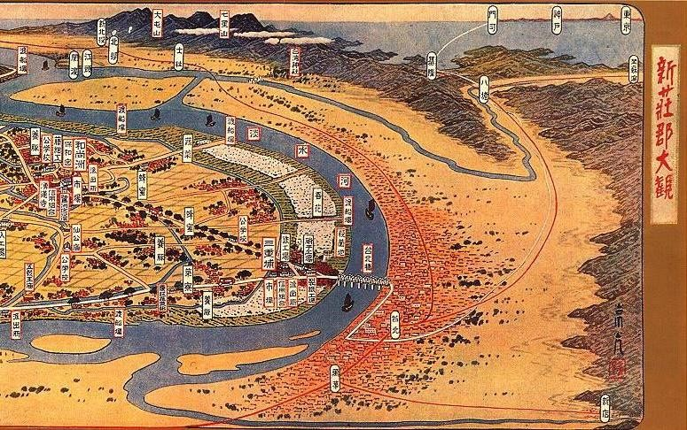

三重空軍一村
人物圖鑑


故事前言
民國三十八年，三重空軍一村迎來了一群年輕的軍人與眷屬。紅磚牆瓦、巷弄交錯，這裡原本只是他們落腳的臨時停靠站，卻在時代的洪流中，成了一生落地生根的家。
一場突如其來的緊急警報，打破了三重空軍一村的平靜。砲兵林志遠抓起飛行夾克奔向基地，這一別，便成了永別。
幾十年後的今天，當你們再次踏入這座村子，空氣中彷彿還留著當年的期盼與遺憾。今天你們將作為時空的「穿越者與見證者」，協助留在民國60年代、獨自守候家園的妻子阿秀，找回那封遲到了半個世紀的信件，完成一場跨越時空的告別。
信件碎片
請幫助阿秀找尋散落在空軍三重一村中的信件碎片。信上有志遠和阿秀才知道的情話，請幫助阿秀找回志遠留給她的話。
頁面操作說明
- 剩餘時間：委託總時間為 90 分鐘，計時器將顯示於主畫面。
- 信件碎片：點擊下方「信件碎片」按鈕，可隨時檢視收集進度與內容。
- 返回總部：點擊下方「回主畫面」，可隨時返回總部確認下一個任務地點。
輸入任務代碼
請檢查任務小卡上8碼代碼
關卡現場位置提示

園區中央的地下甬道是二戰時期是日軍台灣軍司令部選定的「高射砲陣地」，負責防守台北橋與總督府。
為了因應戰爭與空襲威脅，日軍在這一帶設置防空相關設施，除了地面上的防空砲台之外，也建造了地下甬道與相關空間。
這些地下設施讓人員能夠在不同的防空位置之間移動，也具有躲避空襲及存放物資等用途。甬道出口就是這套地下防空系統留下來的歷史痕跡之一。
找到白T關主後：
陣地巡查任務牆
點擊完成定點打卡（可重複查看指示）
任務二：終戰密碼


三重空軍一村最初近60戶原眷戶中，有來自四川、湖南、江蘇、安徽、河北以及山東等大江南北的軍人與眷屬。在物資缺乏的年代，用配給的麵粉、黃豆、豬油，互相交流家鄉味，催生出獨特的「台灣眷村菜」。今天就讓我們聽聽這些村民說的是哪道菜吧！

請先拍攝現場「村長的家」作為調查記錄，以解鎖眷村味覺檔案。
大時代的動盪，讓無數家庭在戰亂中遷徙來台。窄小的屋舍、悶熱的夏日，讓鄰居們習慣搬著竹椅聚在村子裡的巨大榕樹下乘涼、聊家常。

對我們而言，這棵老榕樹下的廣場不只是公共客廳，更是凝聚所有人情感、度過童年時光的避風港。今天，請跟著我們一起走入這座充滿人情味的榕樹廣場，回到那段克難卻溫暖的歲月。
【尋人啟事】目標特徵
她可能在紅色大門旁。
3個任務
歡迎來到榕樹廣場！在接下來你們將扮演眷村裡的鄰家小孩，請協助完成以下挑戰。
任務一：在地兒童
加入跳橡皮筋跳繩遊戲，和隊員們一起完成 5 下跳繩。
任務二：中學生
請找到他，一起完成編繩子與猜字謎任務。
任務三：老奶奶
主動前往攀談，聽取奶奶的歷史解說並完成知識測驗。
知識測驗
穿越96通廊・抵達群星會
請穿越96通廊找到大蘋果前的群星會現場。
聆聽主持人為我們帶來的時代金曲，並向現場人員索取通關密語。
時光膠囊
三重空軍一村曾是充滿人情味與時代記憶的。在物資缺乏的年代裡，空氣中總是飄著淡淡的花香，街頭巷尾也流淌著動人的歌聲。

今天，我們將跟著穿著白T小天使的腳步，打開珍藏多年的木盒，一起找回三重過去被遺忘的產業與溫暖回憶。
尋人啟事
請找尋穿著白T的關主小天使，向他回報並取得進一步的指示。
三重花香產業
明星花露水
秀英花是三重的代表花，在清朝從福建漳州引進台灣種植，目的是將茶葉加工製成花香茶，賣給其他國家。
為什麼在三重種植呢？因為當時製茶場集中在台北大稻埕，又有大片土地可以種植，可以在採收後直接水路輸運，送到大稻埕碼頭。當時除了秀英花，也種植茉莉花、黃梔花。
秀英花除了在冬、春製茶季時加工成花茶香片，也是重要的香水原料之一。\n曾經的大眾香水「明星花露水」在1951年從上海跟著政府遷臺之後，就曾以秀英花作為主要成分。現在讓我們跟著關卡小天使，一起聞聞重製版的「明星花露水」吧！
尋找香氛記憶
桌上有瓶明星花露水，裡面藏著哪些花香？畫面上有六種花，答案共有兩種，快從中把它們找出來吧！
點播時代金曲
以前三重讓人記得的，可不只有花香，還有熱鬧的唱片產業。選一首你現在最想聽的曲子點播吧！
市集攤位挑戰
請找尋市集中的以下關卡，並完成其中一項
遊戲 A：沙包大戰
遊戲 B：復古彈珠台
最後一封信
歷史的最後一塊拼圖，
藏在回憶的最深處。
志遠最後的身影被紀錄在經緯度：
25.057678, 121.499645
請前往此座標尋找長官/NPC：
結案憑證
提示
歷史碎片收納盒
跨越時空的信
請跟著阿秀一起唸出志遠留下的 8 個字
點擊任意處關閉
點擊任意處或右上角關閉